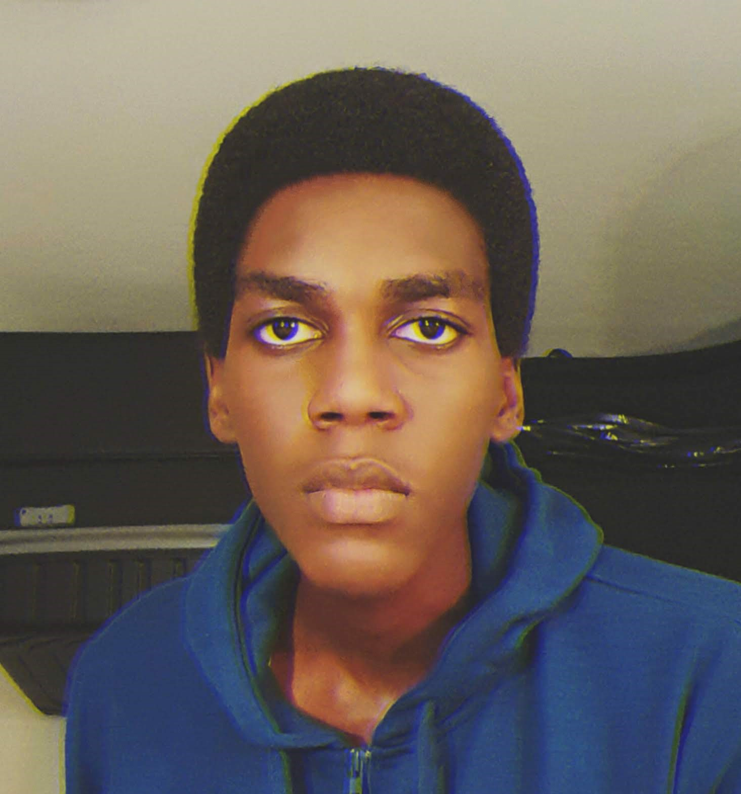

Data Communications changed the way I see technology — not just apps and devices, but the signals, protocols, and infrastructure that keep the world connected. This project captures what I've explored throughout the course.
How data is represented and transmitted using analog and digital signals, and how devices convert information into transmittable forms.
From fibre optics to wireless — understanding the different paths data can take and why some methods are faster, more reliable, or more secure.
How systems detect and correct mistakes during transmission using techniques like CRC, parity checking, and checksums.
The OSI and TCP/IP models — how communication is divided into structured layers to make networking organized and scalable.
How devices manage traffic and avoid collisions so communication stays efficient when multiple systems send data simultaneously.
From telegraph systems to modern internet infrastructure — understanding how global connectivity evolved into what it is today.
A visual breakdown of how data travels from sender to receiver — through encoding, routing, and decoding — modelled on real network architecture.
Hover over any node to inspect it
What I enjoyed most about this course is how it connects software with real-world infrastructure. As an Industrial Software Engineering student, understanding both the software and the systems side matters — and this course brought those together really well.
It also made me think more about how communication technology can improve accessibility, education, and digital opportunities across different communities — especially in contexts where connectivity is still being built out.
A solid overview of key Data Communications concepts — great for revision before exams or assignments.
A copy of the course assignment submitted via Turnitin. Click to view the full document in a new tab.
View Assignment ↗Full project source code and assets hosted on GitHub for review and assessment.
Open on GitHub ↗YouTube resource on Data Communications concepts — plays embedded on this page in the Video section.
Watch Video ↑